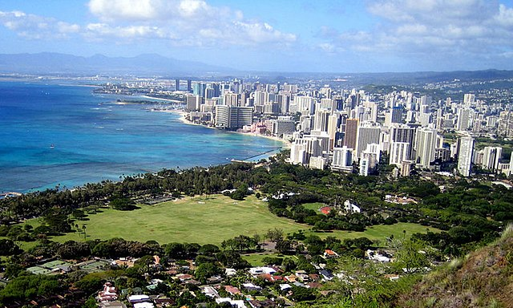
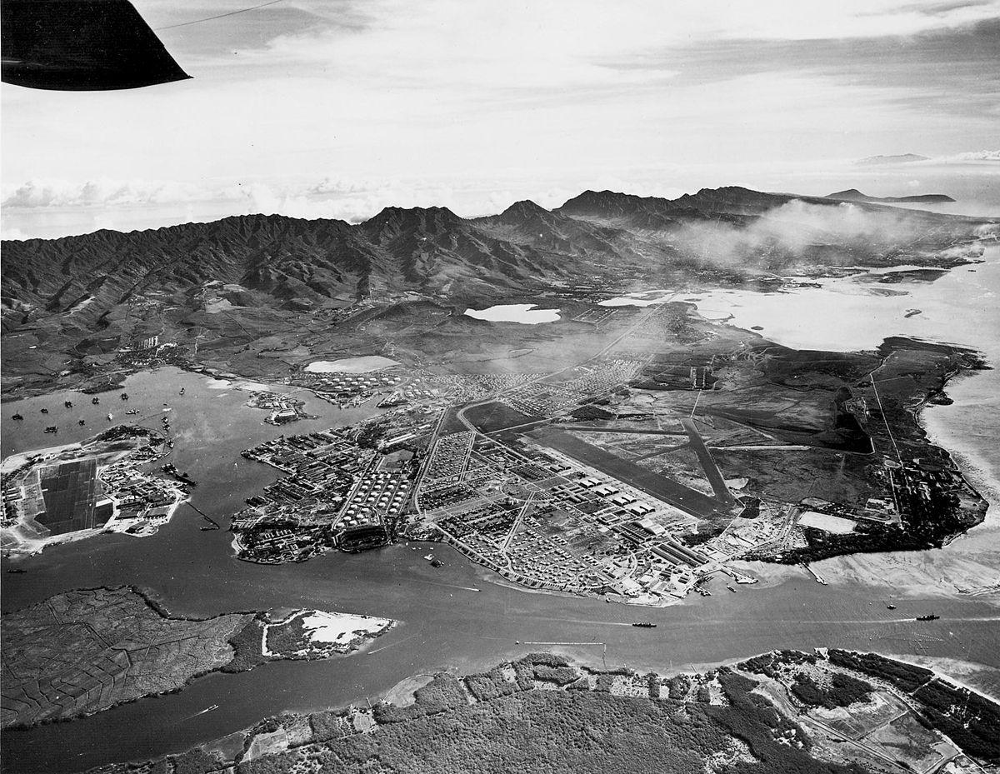
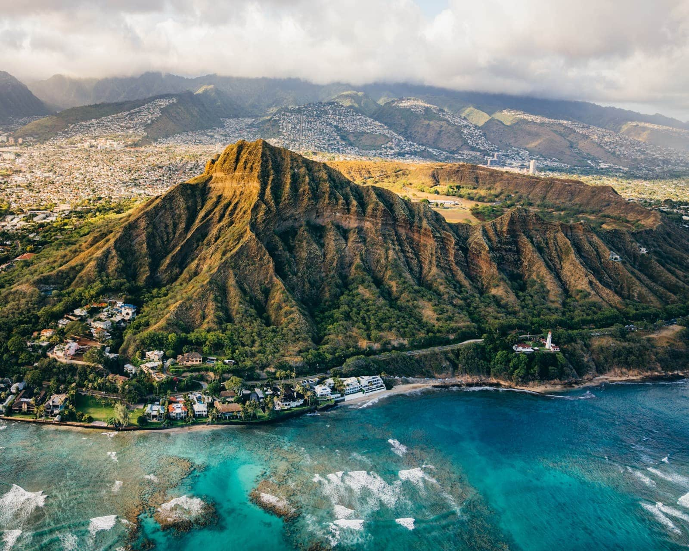

Miejsca warte uwagi
Honolulu
Honolulu to stolica i największe miasto amerykańskiego stanu Hawaje, położone w hrabstwie Honolulu na wyspie O'ahu, port morski.
Pearl Harbor
Joint Base Pearl Harbor-Hickam (JBPHH) - amerykańska morsko-lotnicza baza wojskowa, powstała w wyniku przemianowania z dotychczasowej bazy morskiej Naval Station Pearl Harbor na Hawajach i jej połączenia 31 stycznia 2010 roku z bazą lotniczą Hickam Air Force Base.
Diamond Head
Diamond Head (haw. Lēahi) - wygasły stożek wulkaniczny znajdujący się na wyspie O'ahu na Hawajach, ok. 8 km na wschód od Honolulu, powstały w wyniku erupcji, która miała miejsce około 150 000 lat temu. Jest to bardzo popularne miejsce odwiedzane często przez turystów ze względu na widoki, rozpościerające się na centrum miasta oraz plażę Waikīkī.
Maui Ocean Center to centrum akwarystyki i oceanografii zlokalizowane w Maalaea na Hawajach, na wyspie Maui. Otwarty 13 marca 1998 r. przez Coral World International obiekt o powierzchni 3 akrów jest największym żyjącym tropikalnym akwarium rafowym na półkuli zachodniej.